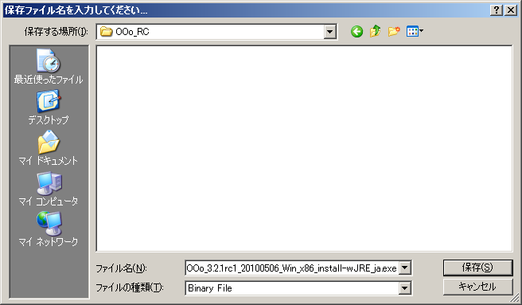
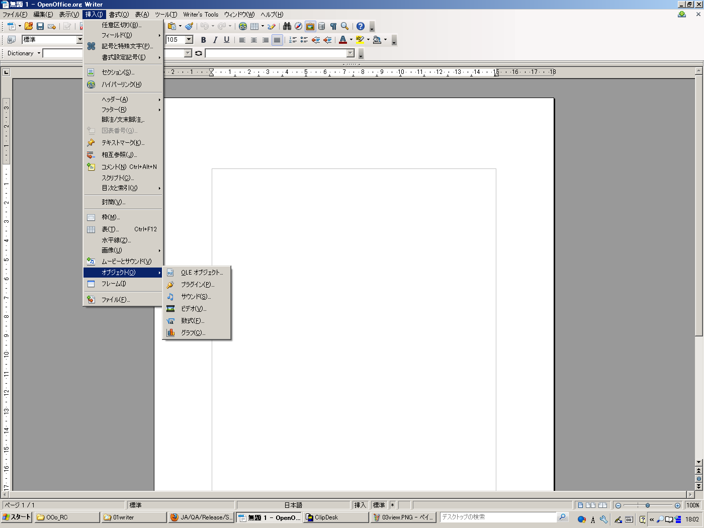
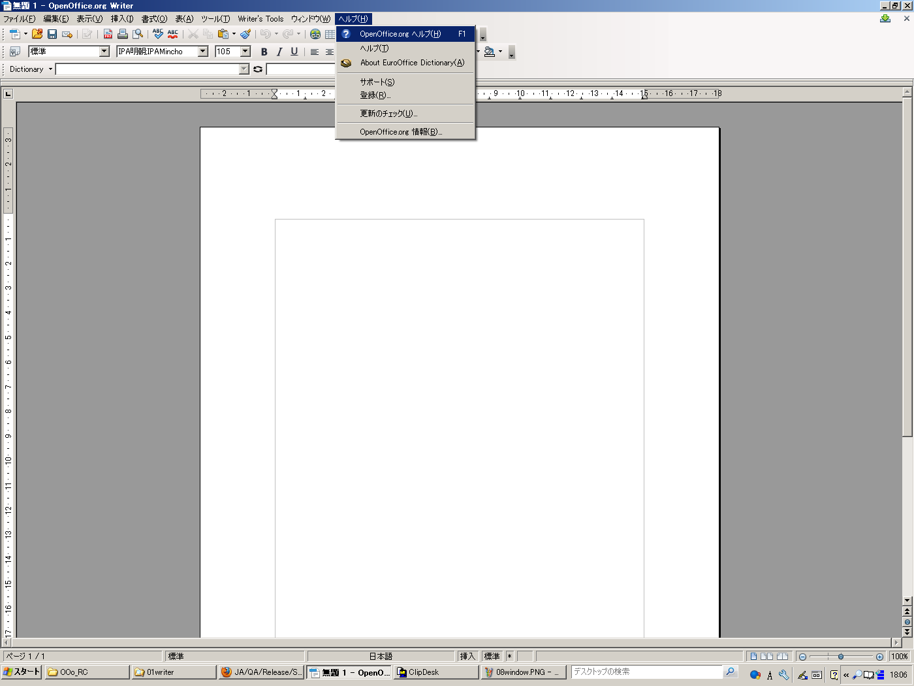
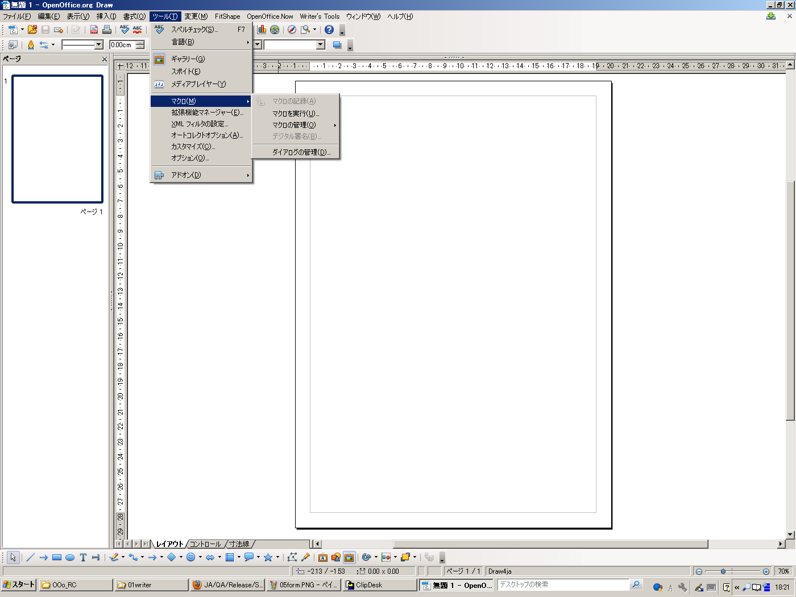

OenOffice.org RC(Release Candiate)版の品質保証参加方法
[ 注意 ]
本Page( というか本Site全般 )は「 管理人の忘備録 」です。
公式なOpenOffice.org関係の如何なるProjectからの許可及び検証を受けていませんので、
本Pageに記した内容について各Projectへの問い合わせは厳禁とさせて頂きます。
1.Release品質保証への参加方法
1)「OpenOffice.org ユーザー登録」する。
具体的方法は以下のpage参照
URL :OpenOffice.org ユーザー登録のやりかたとそのメリット
[OpenOffice.orgコミュニティフォーラム より]
2)Login及びMailing List購読Request送信
LM-)Mailing List購読申し込み2
Mailing List購読Request送信
&emsp=>上記1)にて登録したmail addressにOpenOffice.org QA(Quality Assurance)よりmailが届きます。
3)以下の関連Siteを読む(2分間)
URL ：簡単なリリース品質保証の方法(初心者向け)
2.概略手順
1)RC版のDown Load方法

D-1)下記URL Siteに移動
URL : Index of /pub/openoffice/extended/3.2.1rc2
=> 本adressはversionに依って変わります。
D-2)一覧から日本語版且つ自分のパソコンのOSと同じものを選択
［選択例］
OS : WindowsXP( or VISTA or 7 ) 32bit版
&emsp=>OOo_3.2.1rc2_20100521_Win_x86_install-wJRE_ja.exe
OS : Mac OSX ( Intel Mac用 )
=>OOo_3.2.1rc2_20100521_MacOS_x86_install_ja.dmg
OS : Debian系Linux 64bit版
=>OOo_3.2.1rc2_20100521_Linux_x86-64_install-deb_ja.tar.gz
OS : RedHat系Linux(CentOS等) 64bit版
=>OOo_3.2.1rc2_20100521_Linux_x86-64_install-rpm-wJRE_ja.tar.gz
OS : Debian系Linux 32bit版(Ubuntu Desktop版等)
=>OOo_3.2.1rc2_20100521_Linux_x86_install-deb_ja.tar.gz
OS : RedHat系Linux(Fedora等) 32bit版
=>OOo_3.2.1rc2_20100521_Linux_x86_install-rpm-wJRE_ja.tar.gz
OS : Solaris Sparc
=>OOo_3.2.1rc2_20100521_Solaris_Sparc_install-wJRE_ja.tar.gz
OS : Solaris( Intel版 )
=>OOo_3.2.1rc2_20100521_Solaris_x86_install-wJRE_ja.tar.gz
以下はOSが「 WindowsXP 」のcaseを記します。
D-3)DownLoad開始
「 OOo_3.2.1rc2_20100521_Win_x86_install-wJRE_ja.exe 」を選択すると右図の様なWindowが表示される。(図は「ver3.2.1 RC1」のものです。)
=>「ファイルを保存」

D-4)保存先Folderの選択
保存先を選択する。
D-5)DownLoad完了
DownLoadが終了すると右図の様にmessageが表示される。
( Browserが「 Firefox 」の場合 )
2)RC版のInstall方法
RC版なので、現在使用中の安定版は残しておきたい。
=>そこで「 安定版をのこしたままRC版をInstall 」する。
I-1)Installer実行
DownLoadしたFileをDouble Click
I-2)Installer実行確認
=>「 実行 」
I-3)Installerによる圧縮Fileの展開
=>「 次へ 」
I-4)展開先Folderの指定
=>今回は「 C:\Down_load\OOo_RC 」 => 「 展開 」
I-5)Installウィザード開始
=>必要DIsk容量を計算。（PCに依るが他の操作に比べて少し時間がかかる。）

I-6)インストールウィザードの中断
このままInstallを続けると安定版と取変わるので一旦中断する。
=>「 キャンセル 」
I-7)インストールウィザードの中断確認
=>「 はい 」
I-8)インストールウィザード中途終了Message
=>「 完了 」
I-9)展開Folderの確認
展開先Folderの内容は右図の様になる。
I-10)インストールウィザード再実行
「スタート」=>「ファイル名を指定して実行」=>Option「 /a 」をつけて実行
=>「 C:\Down_load\OOo_RC\setup.exe /a 」=>「OK」
I-11)インストールウィザード再開
=>「次へ」
I-12)ProgramのInstall先の指定1
=>「変更」
I-13)ProgramのInstall先の指定2
=>任意のFolderに変更(今回は「 C:\Down_load\OOo321RC 」）=>「インストール」
I-16)Install先Folderに新規Folderを作成
I-17)任意のFOlder名に変更
=>今回は「config」とする。
I-18)実行File格納Folderを開く
=>「 C:\Down_load\OOo321RC\OpenOffice.org 3\program 」
I-19) bootstrap.ini を編集
=>「 bootstrap.ini 」選択=>「 プログラムから開く 」
I-120)Applicationの選択
=>Editor Soft[ Notepad等 ]を選択
I-21)UserInstallationを変更(その1)
=>「 UserInstallation=$SYSUSERCONFIG/OpenOffice.org/3 」
を次のように変更
I-22)UserInstallationを変更(その2)
=>「 UserInstallation=C:/Down_Load/OOo321RC/config 」=>「 上書き保存 」
[ 注意 ]
folder間の区切りは「\」で無く「/」を使用する事。
「\」では起動出来ない。
3)RC版の起動確認
B-1)OpenOffice.org起動Programの実行
独立としてRC版をInstallしたので、「スタート」=>「全てのプログラム」中には項目は無い。そこで直接Programを実行する。
=>以下の手順にて起動Fileを開く。
1)エクスプローラーを起動
2)下記Folderに移動
C:\Down_load\OOo321RC\OpenOffice.org 3\program
3)「 soffice.exe 」を実行
B-2)OpenOffice.org初期起動画面
=>「 次へ 」
B-3)Profileの登録
本ProfileはOOo Fileの作成/変更時の作成者/変更者になりますので識別可能な情報を入力しましょう。
特にNetWorkを介してFileを共有する場合は変更者の識別が可能になりますので必須と思います。
B-4)オンライン更新 & 完了
=>「 次へ 」=>「完了」
B-6)OpenOffice.orgの起動画面
以下の事柄をcheck
・文字化けは無いか?
・各Programは起動/終了するか?

B-D)Draw起動画面
B-B1)Base起動画面1
a)データベースの選択
=>「 既存のデータベース作成 」にcheck=>「 次へ 」
B-B2)Base起動画面2
b)データベースの選択
=>「 完了 」
B-B3)Base起動画面3
c)データベースの保存先指定
B-B4)Base起動画面4
d)保存先に移動=>DataBase名(File名)を指定=>「保存」
B-B5)Base起動画面5
e)BASE画面起動
4)各Programの確認
M-W1)Writer
ファイルMenu
[ Check項目例 ]
・新規/既存のOOo fileが作成/変更/保存できるか?
・MS-Office fileの読み込み/保存できるか?
・日本語の文字化け等が無いか?
・再読み込みできるか？
・XML、pdf形式にてExportできるか?
・プロパティの内容は合っているか?
・ドキュメントテンプレートはImport/Exportできるか?
・webブラウザーでプレビューできるか?
・印刷は問題無いか? 等々
M-W2)Writer
「ファイル」=>「プロパティ」Dialog
M-W3)Writer
編集Menu
[ Check項目例 ]
・Copy/切取り/貼付けはmenu&右クリックからできるか?
・日本語の文字化け等が無いか?
・検索/置換ができるか？ 等々
M-W4)Writer
表示Menu
[ Check項目例 ]
・表示アイコン/menuが設定通りに表示されるか?
・全画面表示での作業に問題は無いか?
・「ズーム」はできるか？ 等々

M-W5)Writer
挿入Menu
[ Check項目例 ]
・改ページはできるか?
・各機能に問題は無いか？ 等々
M-W6)Writer
書式Menu
[ Check項目例 ]
・標準書式の設定はできるか?
・印刷範囲は設定できるか?
・文字の種類の変換は出来るか?
・スタイルと書式設定に新規設定を追加できるか?
・アンカーの位置は変更できるか?
・配置が機能するか? 等々
M-W7)Writer
表Menu
[ Check項目例 ]
・表の作成/削除/選択はできるか?
・セルのコピー/結合/配置はできるか?
・サイズの自動調整はできるか?
・表を文字列に変換できるか?
・セルに数式が入力/計算できるか? 等々
M-W8)Writer
ツールMenu
[ Check項目例 ]
・スペルチェックはできるか?
・マクロを実行させれるか?
・拡張機能は追加できるか?
・オプション設定ができるか?
・アドインが追加できるか? 等々
M-W9)Writer
ウィンドウMenu
[ Check項目例 ]
・新しいウィンドウは開閉はOK?
・今開いているOOo fileは全て表示されるか? 等々

M-W10)Writer
ヘルプMenu
[ Check項目例 ]
・ヘルプの内容を抽出読みする
・文字化けは無いか? 等々
M-C1)Calc
ファイルMenu
[ Check項目例 ]
・新規/既存のOOo fileが作成/変更/保存できるか?
・MS-Office fileの読み込み/保存できるか?
・日本語の文字化け等が無いか?
・再読み込みできるか？
・XML、pdf形式にてExportできるか?
・プロパティの内容は合っているか?
・ドキュメントテンプレートはImport/Exportできるか?
・webブラウザーでプレビューできるか?
・印刷は問題無いか? 等々
M-C2)Calc
編集Menu
[ Check項目例 ]
・Copy/切取り/貼付けはmenu&右クリックからできるか?
・日本語の文字化け等が無いか?
・検索/置換ができるか？ 等々
M-C3)Calc
表示Menu
[ Check項目例 ]
・表示アイコン/menuが設定通りに表示されるか?
・全画面表示での作業に問題は無いか?
・「ズーム」はできるか？ 等々
M-C4)Calc
挿入Menu
[ Check項目例 ]
・改ページはできるか?
・各機能に問題は無いか？ 等々
M-C5)Calc
書式Menu
[ Check項目例 ]
・標準書式の設定はできるか?
・印刷範囲は設定できるか?
・文字の種類の変換は出来るか?
・スタイルと書式設定に新規設定を追加できるか?
・アンカーの位置は変更できるか?
・配置が機能するか? 等々
M-C6)Calc
ツールMenu
[ Check項目例 ]
・スペルチェックはできるか?
・マクロを実行させれるか?
・拡張機能は追加できるか?
・オプション設定ができるか?
・アドインが追加できるか? 等々
M-C7)Calc
データMenu
[ Check項目例 ]
・並び替えの範囲指定/選択/実行が出来るか?
・フィルタ機能は使えるか?
・入力規則は使えるか(リストからの選択等))? 等々
M-C8)Calc
「データ」=>「フィルタ」=>「標準フィルタ」Dialog
M-D1)Draw
ファイルMenu
[ Check項目例 ]
・新規/既存のOOo fileが作成/変更/保存できるか?
・日本語の文字化け等が無いか?
・再読み込みできるか？
・XML、pdf形式にてExportできるか?
・プロパティの内容は合っているか?
・ドキュメントテンプレートはImport/Exportできるか?
・webブラウザーでプレビューできるか?
・印刷は問題無いか? 等々
M-D2)Draw
編集Menu
[ Check項目例 ]
・Copy/切取り/貼付けはmenu&右クリックからできるか?
・日本語の文字化け等が無いか?
・検索/置換ができるか？ 等々
M-D3)Draw
表示Menu
[ Check項目例 ]
・表示アイコン/menuが設定通りに表示されるか?
・全画面表示での作業に問題は無いか?
・「ズーム」はできるか？ 等々
M-D4)Draw
挿入Menu
[ Check項目例 ]
・改ページはできるか?
・各機能に問題は無いか？ 等々
M-D5)Draw
書式Menu
[ Check項目例 ]
・標準書式の設定はできるか?
・印刷範囲は設定できるか?
・文字の種類の変換は出来るか?
・スタイルと書式設定に新規設定を追加できるか?
・アンカーの位置は変更できるか?
・配置が機能するか? 等々

M-D6)Draw
ツールMenu
[ Check項目例 ]
・スペルチェックはできるか?
・マクロを実行させれるか?
・拡張機能は追加できるか?
・オプション設定ができるか?
・アドインが追加できるか? 等々
M-D7)Draw
変更Menu
[ Check項目例 ]
・図形の回転/反転/変換/整列/配置ができるか?
・シェイプ機能(１つにする等)は使えるか? 等々
Impress、Math、Baseも同様に行う。
5)UnInstall
U-1)Uninstall前に再起動
上記方法にてIntallした場合はOSのレジストリの変更も無いのでUninstallはInstall Folder(今回は「 C:\Down_load\OOo321RC 」)を削除するだけで良い。
但し、再起動を行わずに削除を行った場合は右図の様なError Messageが表示されて削除出来ない場合がある。
U-2)クイックスタートは終了させておく
右図のように「クイックスタート」が常駐されている場合も上記U-1)と同じmessageが表示される。
「クイックスタート」は終了させてから削除を行う。
U-3)Install Folderの削除
Install Folderを選択し、削除する。
U-4)Install Folderの削除中
本Windowが消えればUninstall終了。
6)報告mailの作成/送信
RM-)Report mailの作成&送信
下記mail宛に右図の様なReport mailを送信する。
以上で「 簡単なリリース品質保証の方法(初心者向け) 」は終了です。
RC版の品質保証を行う利点として以下の事柄があると思います。
1)最新版が自分のPC環境にあっているか速く知る事ができる。
2)普段使わないOpenOffice.orgの機能を知る可能性が高い。
3)OpenOffice.org Projectに参加しているという満足感が得られる。
上記3)は人それぞれ価値観が違うと思いますが、好意を寄せる異性がOpenOffice.orgの操作で困っている時に
「私はOpenOffice Projectの一員です。」と言うと好感度がUpすると思います。